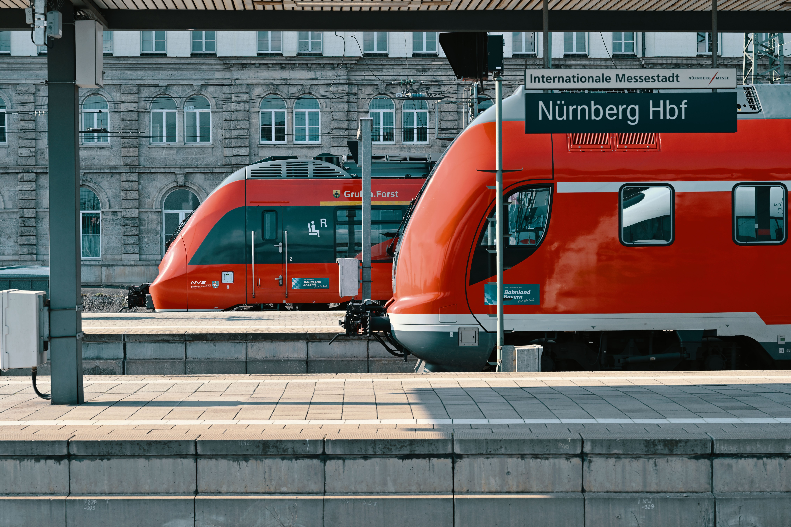
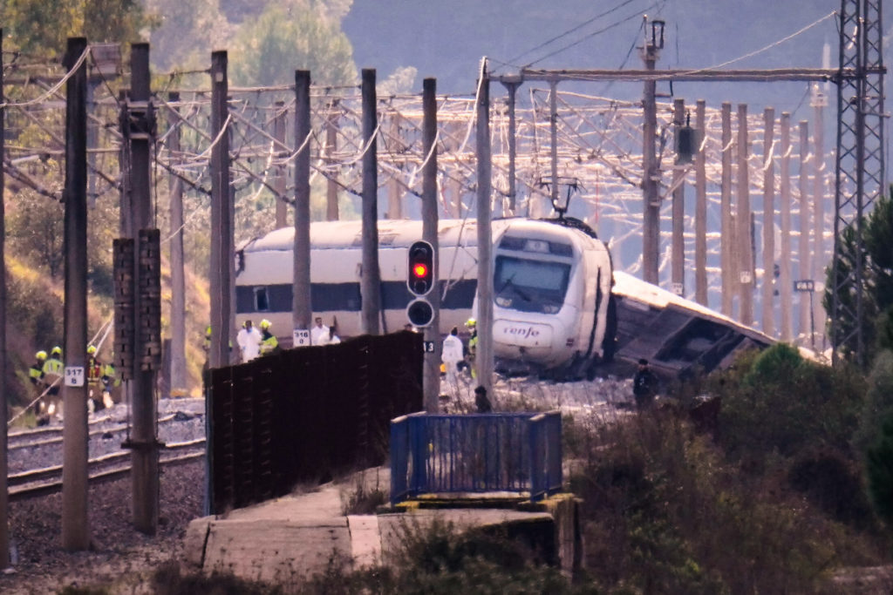

A train is one of the most useful and important means of transport in the world. It helps people travel from one place to another comfortably and safely. Trains are used by millions of people every day for travelling, working, studying, and transporting goods. A train usually runs on railway tracks and is pulled by an engine. Some trains are powered by electricity, while others use diesel. Trains come in different shapes, sizes, and designs. Some trains are small and carry only a few passengers, while others are very long and carry hundreds of people. A train has many coaches connected together, and each coach has seats for passengers. When we travel by train, we can enjoy beautiful views of mountains, rivers, forests, villages, and cities through the windows. Travelling by train is often a wonderful experience because we can relax and enjoy the journey. Many people prefer trains because they are comfortable, affordable, and convenient. Trains are also important for students who travel to school and college, and for workers who travel to their workplaces. There are different types of trains, such as passenger trains, express trains, local trains, goods trains, metro trains, and high-speed trains. Passenger trains are used to carry people from one city to another. Express trains travel faster and stop at fewer stations. Local trains stop at many stations and are useful for daily travellers. Goods trains carry important materials such as food, clothes, vehicles, machines, coal, and other products. Metro trains are commonly used in large cities to reduce traffic on roads. High-speed trains can travel at very high speeds and help people reach their destinations quickly. The railway station is the place where trains arrive and depart. At a railway station, we can see passengers waiting for their trains,

This is the train crash in spain
Every train has a driver who controls its movement and makes sure that it travels safely. Railway guards, ticket collectors, station managers, cleaners, and other workers also help the railway system function properly. Before boarding a train, passengers should check their tickets, platform numbers, and departure times. They should stand behind the safety line and wait until the train stops completely. We should never try to get on or off a moving train because it can be dangerous. We must keep our surroundings clean and avoid throwing rubbish from the windows. We should also respect other passengers and give seats to elderly people, pregnant women, and people who need assistance. Trains play a very important role in the development of a country. They connect villages, towns, and cities and make transportation easier. They help businesses transport goods and allow farmers to send their products to different markets. Railways also create many job opportunities for people. In many countries, trains are an important part of the economy. They save time and energy and can carry more passengers than many other vehicles. Compared with cars and buses, electric trains can produce less pollution per passenger, especially when they use clean electricity. This makes trains an environmentally friendly choice for transportation. Modern trains have many useful facilities, such as comfortable seats, air conditioning, lights, charging points, clean toilets, and sometimes restaurants. Some long-distance trains even have sleeping coaches where passengers can rest during overnight journeys. High-speed trains are an amazing invention of modern technology because they can travel faster than ordinary trains. They have special designs that reduce air resistance and make journeys smoother. Some trains are designed to travel through tunnels, across bridges, and over long distances. The sound of a train moving along the railway tracks is familiar and exciting to many people. Children often feel happy when they see a train passing by. They enjoy watching its coaches move one after another. Travelling on a train with family and friends can create beautiful memories. People can talk, read books, listen to music, eat snacks, and enjoy the scenery during the journey. Trains are especially useful during busy holidays when roads become crowded with cars and buses. They can help reduce traffic congestion and make travelling more organised.